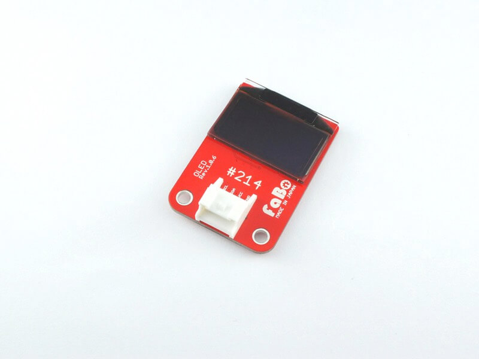
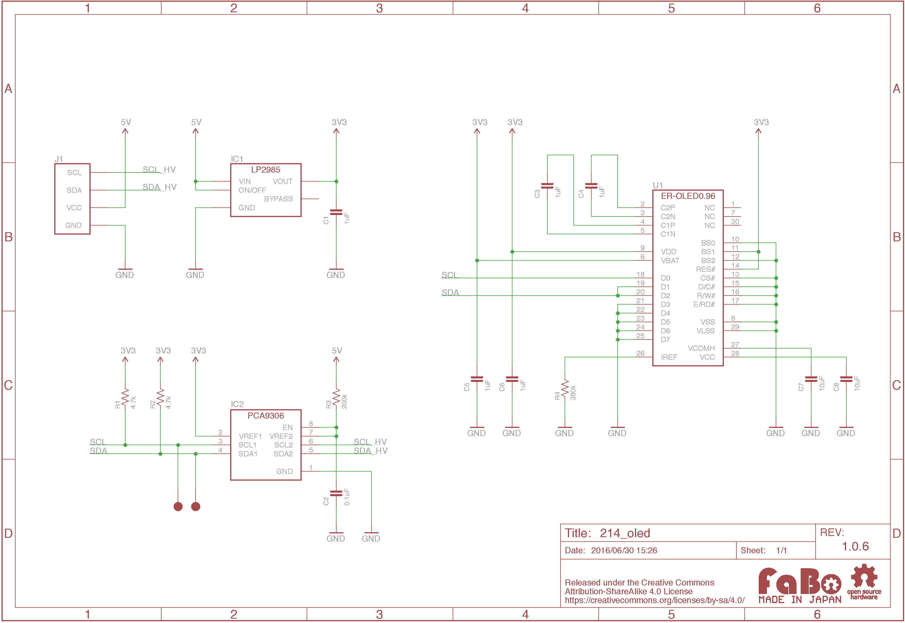
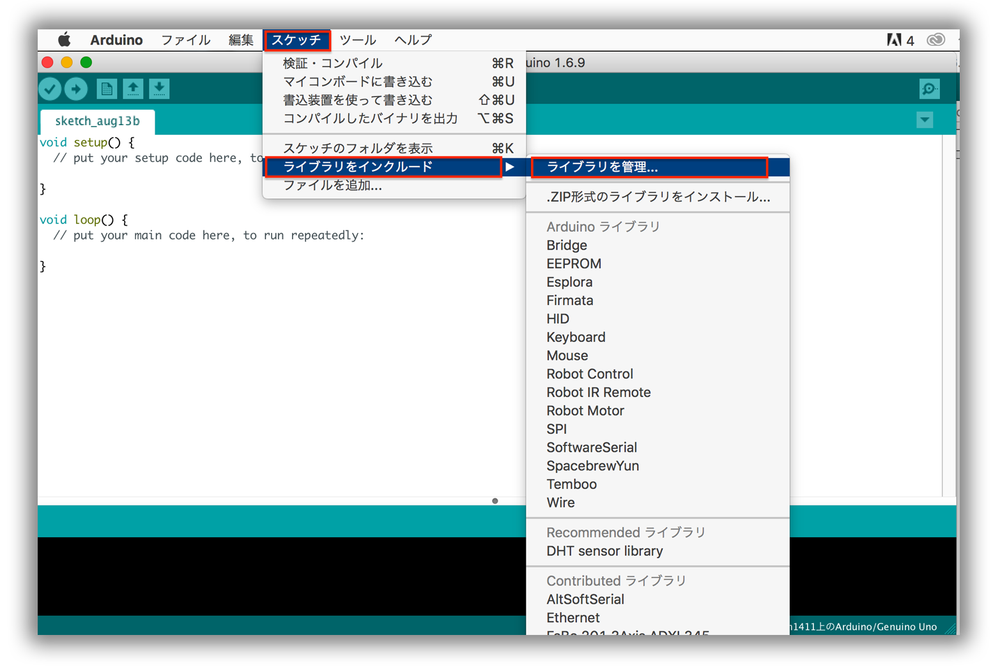
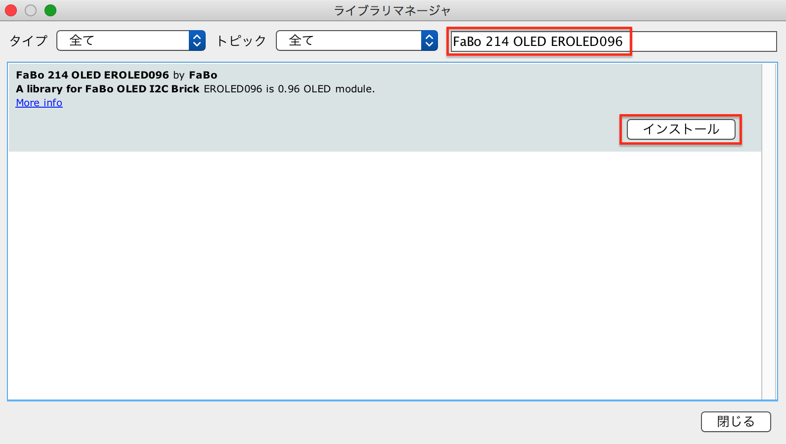

#214 OLED I2C Brick

Overview
有機ELモジュールを使用したBrickです。
I2Cで表示データを制御できます。
接続
I2Cコネクタへ接続します。
ER-OLED0.96 Datasheet
| Document |
|---|
| ER-OLED0.96 Datasheet |
Register
| Slave Address |
|---|
| 0x3C |
回路図

Library


ライブラリ名：「FaBo 214 OLED EROLED096」
for RapberryPI
- pipからインストール
1 | |
ソースコード
上記のArduino Libraryをインストールし、スケッチの例、「FaBo 214 OLED EROLED096」からお選びください。
1 2 3 4 5 6 7 8 9 10 11 12 13 14 15 16 17 18 19 20 21 22 23 24 25 26 27 28 29 30 31 32 33 34 35 | |
Parts
- 128x96 0.96OLED Module
GitHub
- https://github.com/FaBoPlatform/FaBo/tree/master/214_oled